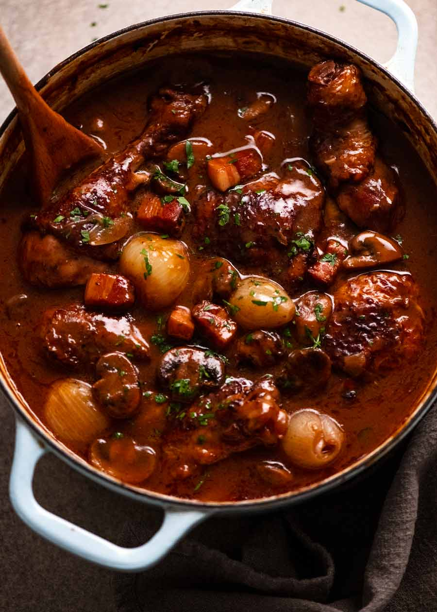

Chicken Stew (Coq au Vin)
This dish is rich in flavour and easy to make
Ingredients
- Chicken thighs
- Onion
- Garlic
- Mushrooms
- Bacon
- Tomato Paste
- Red wine (can substitute with red wine vinegar in a pinch
- Chicken stock
Steps
- Chop bacon into small pieces and cook off fat in pan. Set aside cooked bacon for later
- Cook chicken in the bacon fat. Most important is to get some good colour on the chicken
- Set aside chicken alongside the bacon, and place in pan onion and garlic. Cook until translucent, and add mushrooms
- Add tomato paste and coat vegetables well, then deglaze the pan with red wine
- When red wine is reduced add chicken stock and bring to a simmer
- Reintroduce chicken and bacon and reduce heat. Leave to cook for upwards of thirty minutes